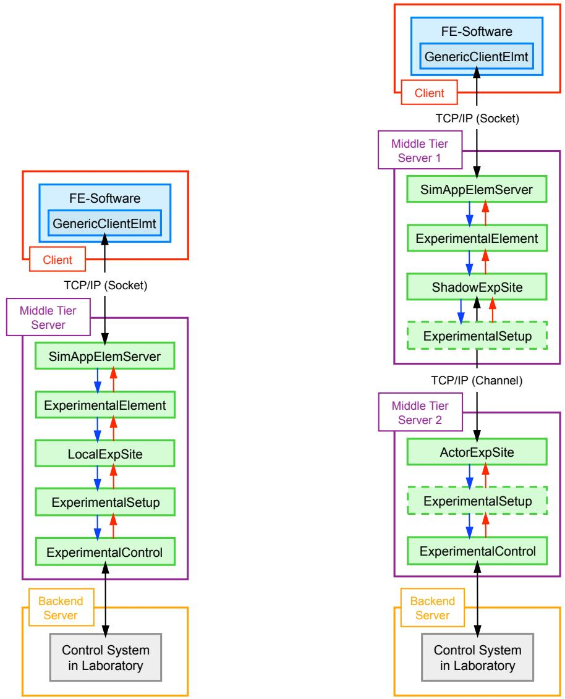

1.1. OpenFresco 简介
混合模拟为结构体系地震响应的试验模拟提供了一种通用、真实且经济高效的方法。混合模拟将实验室中采用标准伺服控制作动器的试件物理试验，与系统数值模拟相结合，以此复现结构体系在地震动作用下的整体响应。
为满足地震工程领域的这一重要需求，试验装置与控制开放框架（OpenFresco） 是一款面向结构体系混合模拟的软件系统。对于地震工程领域用户而言，OpenFresco 是一款实用易用的软件包，可将各类混合模拟算法、实验室与控制系统、试验装置以及数值模拟模型灵活组合，完成特定的混合模拟试验。对于致力于新型混合模拟方法研究的科研人员与开发者，OpenFresco 采用面向对象软件框架架构，具备高度的灵活性、可扩展性与可复用性。
{kind=link}

图 1.1 OpenFresco 本地模拟（左）与分布式模拟（右）软件架构
OpenFresco 的设计、实现与概念验证由高桥（Takahashi）与芬维斯（Fenves）于 2006 年阐述。舍伦贝格与马欣（2006a）将 OpenFresco 与 OpenSees 数值模拟结合使用；舍伦贝格与马欣（2006b）应用 OpenFresco 开展了地震动作用下结构倒塌的混合模拟；舍伦贝格等人（2006c）介绍了 OpenFresco 在各类混合模拟工程应用中的进展。
OpenFresco 早期版本与地震工程模拟开放系统（OpenSees, 2006）深度绑定，仅依托其开展数值模拟。为向用户提供更丰富的数值建模与模拟软件选择，OpenFresco 完成通用化重构并发布2.6 版本。重构后的 OpenFresco 整体设计仍沿用高桥与芬维斯（2006）的思路，但采用了多层客户端 - 服务器架构，分为客户端、一至两个中间层服务器与后端服务器 图 1.1 中，蓝色框代表用于数值模拟的有限元软件，绿色框为 OpenFresco 进程，灰色框为实验室控制系统；红色框为客户端侧进程，紫色框为中间层服务器侧进程，橙色框为服务器侧进程。
与 OpenFresco 2.5 版本一致，试验装置可部署在中间层服务器或后端服务器，为用户定义实验室试件的试验配置与控制方式提供了极大灵活性。
OpenFresco 的核心特点之一是： 图 1.1 中的有限元软件采用通用单元接口，即通用客户端单元（Generic-Client Element）。使用该单元时，用户无需在有限元软件中额外创建试验专用单元，且该单元可便捷集成至所有支持用户自定义单元的有限元软件。这一特性使 OpenFresco 可适配多款数值计算软件，包括 OpenSees、Matlab、LS-DYNA、UI-SimCor、Abaqus 与 Simulink。对于开发者与高级用户，可自定义试验单元以满足复杂应用需求；而对绝大多数混合模拟用户，通用客户端单元已足够使用。
OpenFresco 的详细安装说明参见《OpenFresco 安装与入门指南》，文档中包含简易混合模拟算例以帮助用户快速上手。OpenFresco 算例手册则为高级用户提供更全面的算例。两类指南均可通过以下网址获取：https://openfresco.berkeley.edu/ 。
本文档提及的软硬件商业产品仅为技术说明，不代表任何背书。